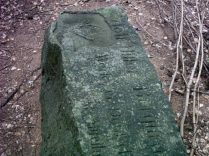

Kilka lat temu jadąc sobie rowerem z moją chrześnicą zauważyłem w lesie duży kamień. Kamień jak kamień, pewnie nie wzbudziłby mojego zainteresowania, ale był dość duży i w miarę kształtny. Dodatkowo w okolicy kamieni było jak na lekarstwo, więc zerknąłem sobie na niego dokładniej. Okazało się, że głaz ten jest z jednej strony gładki a na owej jedynej płaszczyźnie widniały jakieś niemieckie napisy. Zdziwienie moje było tym większe, że pierwsze słowa to "Adolf Hitler" - dziwne, że do dziś się zachowały
Ilekroć jadę sobie tamtędy zawsze zerkam z zainteresowaniem, czy kamień dalej leży. Ostatnio (8 sierpnia 2004 roku) pożyczyłem sobie od mojego taty aparat i postanowiłem ponownie sprawdzić, jak tam się kamień ma. Leży tak jak leżał, na skraju lasu, kilka metrów od asfaltu. Zrobiłem kilka zdjęć które prezentuję poniżej.
| Głaz leży naprawdę blisko ulicy. Może to zdjęcie nie wyszło nazbyt relwelacyjnie, ale ten biały pas widoczny w drugim planie to asfalt. Nazbyt duża różnica jasności niestety była za trudna dla aparatu. | |
 |
Niestety, nie miałem przy sobie metrówki, więc nie mogłem zmierzyć "obiektu". Ale widoczna na tym zdjęciu "półlitrówka" pozwala przynajmniej oszacować jego rozmiary. Kamień jest naprawdę spory. |
|  | Z lewej strony widoczny jest jak gdyby hełm niemiecki z godłem. Elementami godła są łopata i dwa kłosy zboża, ale pewien nie jestem. Pod godłem widać fragment jak gdyby dat, wygląda to na 1933 - 19??, ale raczej trzeba się domyślić, bo daty są bardzo zniszczone. |
 |
Sam napis jest jak w całkiem przyzwoitym stanie: Adolf Hitler Bergstraße Werk der Deutschen ??? ! `nst-Abteilung 115/4 Friedland. W miejscu gdzie wstawiłem znaki zapytania znajdowało się jeszcze jakieś słowo, ale ktoś je dość dokładnie zniszczył, widać to w lewym dolnym rogu tego zdjęcia. Również pierwsza litera napisu jest znacznie uszkodzona. |
 |
Samo godło i daty pod nim raczej nie były uszkodzone celowo, powodem nieczytelności była najprawdopodobniej erozja. |
 |
Być może godło miało kiedyś więcej szczegółów, ale dzisiaj mało z nich jest widocznych. |
Sam jestem ciekawy skąd kamień ten pochodzi i co oznacza widoczny na nim napis. Gdyby ktoś miał na ten temat jakieś informacje, to byłbym wdzięczny. Ciekawy jestem też, czy ktoś wie, gdzie kamień ten leży. "Fredland" to dzisiejszy Mieroszów, dla ułatwienia dodam, że bliżej z tego miejsca do Mieroszowa niż do Krzeszowa :-) A dokładnie w linii prostej jest to 8,5 km od centrum Krzeszowa.
W Mieroszowie (niem. Friedland) znajdowała się filia obozu koncetracyjnego Gross Rosen
dodano 01-10-2006
Więcej informacjo o kamieniu można znaleźć w artykule Tomasza Rzeczyckiego "Szosa Chełmsko - Łączna" (Sudety nr 12/57/ grudzień 2005, strona 40) a także Marcina Dziedzica "Szosa Chełmsko-Łączna cd." (Sudety nr 2/59/ luty 2006, strona 38). W interpretacji Marcina Dziedzica widoczne na kamieniu godło należy do Służby Pracy Rzeszy (niem. Reichsarbeitsdienst, w skrócie RAD). I trudno nie przyznać mu racji, gdyż widoczne poniżej godło Reichsarbeitsdienst, z łopatą i kłosami, jest niemal identyczne jak to umieszczone na kamieniu.
| Godło Reichsarbeitsdienst, rysunek pochodzi z niemieckiej Wikipedii (http://de.wikipedia.org/wiki/Reichsarbeitsdienst), za informację bardzo dziękuję Panu Marcinowi Dziedzicowi :-) |
dodano 29-11-2015
29 listopada 2015 roku otrzymałem e-mailem następujacą informację: "(...) piszę w sprawie tego kamienia. Z tego co się dowiedziałem jest to pomnik poświęcony Adolfowi Hitlerowi. Druga jego cześć znajduje się przy gospodarstwie przed czarcimi skałami w Łącznej (...) Można zobaczyć z głównej drogi. Jest wkomponowana w w trawiaste zbocze obok drogi wjazdowej do gospodarstwa. Może Pana to zainteresuje. Pozdrawiam (...) - bardzo dziękuję za tę informację pewnemu życzliwemu internaucie :-)
dodano 16-03-2017
Informacje o tym kamieniu znajdziemy również w książce Tomasz Rzeczycki - "Zagadka Drogi Sudeckiej". Autor stwierdza tam, że jest to pamiątka po budowniczych drogi. W budowę miał być zaangażowany właśnie pododdział 115/4 Służby Pracy Rzeszy z Mieroszowa. W ten sposób zdradzam lokalizację kamienia, bo faktycznie znajduje się on właśnie przy owej drodze, choć ciekawy jestem, czy rzeczywiście była to docelowa lokalizacja kamienia czy też umieszczony został on tam wtórnie (np. wyrzucony do lasu).

{kind=link}
{kind=link}